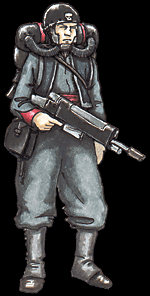

Imperial Forces |
Force Disposition Introduction |
Ork Forces |
|

Positioned mainly around the captured Acheron Hive, the Noctan Strike Forces are using their incredible skills at infiltration and night raiding to hinder the occupying Orks wherever possible. When it became clear that Acheron would fall to the Ork advance, Colonel Walde, leading the 29th Noctans, ordered three of his companies to infiltrate the Hive. Tasked with leading a guerrilla war against the marauding Orks, the brave men of these companies buried themselves deep within the labyrinthine tunnels of Acheron's undercity to escape detection and organise the human survivors of the Orks' attack into a solid resistance.
Colonel Walde was able to keep in communication with these companies as every night, squads made their way out of the undercity, past the Ork patrols, to set up portable comm-links that Walde used to co-ordinate attacks on the east face of Acheron. The east face of the Hive became Walde's main objective as it had suffered greatly during the Orks' assault and much of the surface was battered and twisted, perfect ground for his Strike Force and extremely difficult for the Orks to defend properly. His most successful action against Acheron to date has since become a text book operation for other Noctan officers.
|
| ||||||||||||||||||||||||||||||||||||||||||||||||||
|
Ordering the companies inside to act in concert with the bulk of the regiment outside the Hive, squads rose up from the undercity at an appointed time, with the aim of targeting known Ork sentry positions and patrol routes. Though the Noctan Strike Forces lack the sophisticated equipment and training of the much-famed Storm Troopers, their exceptional night vision makes them comparable to the elite warriors during night raids and the elimination of a few scattered Orks proved to be no obstacle. With gaps readily apparent in the Orks' perimeter, skilled infiltrators from the regiment outside of the Hive moved in, planting powerful explosives at key points designed to cause as great damage to the main Ork forces positioned within the east face of Acheron. When the charges were detonated, the whole lower eastern half of Acheron Hive erupted in huge gouts of fire. Though the damage to the actual structure of the Hive was negligible, the terror and confusion of the Orks inside was complete. The entire 29th, 37th and 84th Noctan Strike Forces moved from hidden positions to begin a full blown assault upon Acheron. Each guardsman of the regiments was charged not to target the acquisition of territory, but the Orks themselves. As the Noctans swept up the eastern face of the Hive, Ork warbands began to flee, unwilling to face these dark warriors that had suddenly appeared in the midst of a huge explosion. The true number of kills the Noctans managed to achieve in that one night will probably never be fully reckoned, but the most conservative estimates number enemy slain in the thousands. As the Noctans moved ever higher through the Hive, the slaughter ceased as the Orks turned on their attackers and resistance steadily increased. Knowing that a pitched battle would favour the Orks and not his Strike Forces, Colonel Walde ordered his forces to pull back out of Acheron, leaving the Orks to attempt the rebuilding of their shattered forces. Since the attack, the Noctans have conducted numerous raids on a far smaller scale, usually in concert with the companies they still have working in the undercity. Colonel Walde has submitted many proposals for the retaking of Acheron Hive and it is clear that any such attempt would see the Noctan Strike Forces leading the initial assaults.
The silent warriors of Noctan are spread throughout the environs of Hive Acheron, mounting frequent raids during the dark hours of Armageddon's long nights. The night vision of these warriors is exceptional, and their dark skin adds to the elaborate camouflage they don as they assault the outskirts of Acheron. Skilled at infiltration, many of Noctan's soldiers range ahead of the main force, planting explosives and sowing confusion before hundreds of figures pour from the darkness into the aliens' midst. The Orks are aware of these activities, however, and soon the Noctan Strike Forces will become the quarry rather than the hunters. | |||||||||||||||||||||||||||||||||||||||||||||||||||